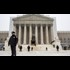

<html lang="en">
 <head>
<!-- Favicon -->
<link rel="shortcut icon" href="../../favicon.ico">
  <meta charset="utf-8"/>
  <title>
   Supreme Court Rules 8-1 Citizens Have No Protection Against 4th Amendment Violations by Police Ignorant of the Law
  </title>
  <meta content="Post on /v/Conspiracy from 2015-04-07 by OWNtheNWO." name="description"/>
  <meta content="Supreme Court Rules 8-1 Citizens Have No Protection Against 4th Amendment Violations by Police Ignorant of the Law" property="og:title"/>
  <meta content="Post on /v/Conspiracy from 2015-04-07 by OWNtheNWO." property="og:description"/>
  <link href="../../static/css/page.css" rel="stylesheet"/>
  <meta content="https://voat.conspiracy.hackliberty.org/thumbnails/ec/8f/ec8f5d59-3589-4461-91b7-3687db55ea47.jpg" property="og:image"/>
  <meta content="https://voat.conspiracy.hackliberty.org/v/conspiracy/76151.html" property="og:url"/>
  <meta content="width=device-width, initial-scale=1" name="viewport"/>
  <link href="https://voat.conspiracy.hackliberty.org/v/conspiracy/76151.html" rel="canonical"/>
  <meta content="article" property="og:type"/>
  <meta content="Voat /v/Conspiracy Archive" property="og:site_name"/>
  <meta content="en_US" property="og:locale"/>
  <meta content="summary_large_image" name="twitter:card"/>
  <meta content="Supreme Court Rules 8-1 Citizens Have No Protection Against 4th Amendment Violations by Police Ignorant of the Law" name="twitter:title"/>
  <meta content="Post on /v/Conspiracy from 2015-04-07 by OWNtheNWO." name="twitter:description"/>
  <meta content="https://voat.conspiracy.hackliberty.org/thumbnails/ec/8f/ec8f5d59-3589-4461-91b7-3687db55ea47.jpg" name="twitter:image"/>
 </head>
</html>
<body class="dark">
 <div id="container">
  <!-- array (
  'submissionid' => 76151,
  'creationDate' => '2015-04-07 06:45:54',
  'domain' => 'dcclothesline.com',
  'formattedContent' => NULL,
  'isAdult' => 0,
  'isAnonymized' => 0,
  'subverse' => 'Conspiracy',
  'thumbnail' => 'ec8f5d59-3589-4461-91b7-3687db55ea47.jpg',
  'title' => 'Supreme Court Rules 8-1 Citizens Have No Protection Against 4th Amendment Violations by Police Ignorant of the Law',
  'url' => 'http://www.dcclothesline.com/2014/12/28/supreme-court-rules-8-1-citizens-no-protection-4th-amendment-violations-police-ignorant-law/',
  'userName' => 'OWNtheNWO',
  'archivedLink' => NULL,
  'archivedDomain' => NULL,
  'isDeleted' => 0,
) -->
  <div style="text-align:center; font-size:24px; font-weight:bold;">
   <a href="../../index.html" style="text-decoration: none; color: inherit;">
    Voat /v/Conspiracy Archive
   </a>
  </div>
  <div class="content" role="main">
   <div class="sitetable linklisting" id="siteTable">
    <div class="submission id-76151 link type-text" id="submission-76151">
     <a name="submissionTop">
     </a>
     <p class="parent">
     </p>
     <a class="thumbnail may-blank" href="http://www.dcclothesline.com/2014/12/28/supreme-court-rules-8-1-citizens-no-protection-4th-amendment-violations-police-ignorant-law/" target="_self">
      
     </a>
     <div class="entry unvoted">
      <p class="title">
       <a class="title may-blank" href="http://www.dcclothesline.com/2014/12/28/supreme-court-rules-8-1-citizens-no-protection-4th-amendment-violations-police-ignorant-law/" tabindex="1" target="_self" title="Supreme Court Rules 8-1 Citizens Have No Protection Against 4th Amendment Violations by Police Ignorant of the Law">
        Supreme Court Rules 8-1 Citizens Have No Protection Against 4th Amendment Violations by Police Ignorant of the Law
       </a>
       <span class="domain">
        (
        <a href="https://archive.searchvoat.co/search.php?d=dcclothesline.com">
         dcclothesline.com
        </a>
        )
       </span>
      </p>
      <p class="tagline">
       submitted
       <time datetime="2015-04-07T06:45:54+00:00" title="04/07/2015 6:45:54 AM">
        2015-04-07T06:45
       </time>
       by
       <span class="userattrs">
        <a class="author may-blank" href="https://archive.searchvoat.co/search.php?u=OWNtheNWO">
         OWNtheNWO
        </a>
       </span>
      </p>
      <ul class="flat-list buttons">
       <li class="first">
        <a class="comments may-blank" href="https://archive.searchvoat.co/v/Conspiracy/76151" rel="nofollow">
         1 comment
        </a>
       </li>
      </ul>
     </div>
     <div class="child">
     </div>
     <div class="clearleft">
     </div>
    </div>
    <div class="clearleft">
    </div>
   </div>
   <div class="horizontal-line">
   </div>
   <div class="commentarea">
    <div class="sitetable nestedlisting" id="siteTable">
     <div class="child id-124051 comment even" style="">
      <div class="entry unvoted">
       <div class="noncollapsed" id="124051" style=";">
        <p class="tagline">
         <a class="author may-blank" href="https://archive.searchvoat.co/search.php?u=un1ty">
          un1ty
         </a>
         <span class="userattrs">
         </span>
         <time datetime="2015-04-07T21:48:27+00:00" title="4/7/2015 9:48:27 PM">
          2015-04-07T21:48
         </time>
        </p>
        <div class="usertext-body may-blank-within" id="commentContent-124051">
         <div class="md">
          <p>
           <blockquote>
            <p>
             “By refusing to hold police accountable to knowing and abiding by the rule of law, the Supreme Court has given government officials a green light to routinely violate the law,” said John W. Whitehead, president of The Rutherford Institute and author of the award-winning book A Government of Wolves: The Emerging American Police State. “This case may have started out with an improper traffic stop, but where it will end—given the turbulence of our age, with its police overreach, military training drills on American soil, domestic surveillance, SWAT team raids, asset forfeiture, wrongful convictions, and corporate corruption—is not hard to predict. This ruling is what I would call a one-way, nonrefundable ticket to the police state.”
            </p>
           </blockquote>
           <p>
            Exactly. This precedent is also known as  “ignorance of the law is no excuse, unless you are the law.'
           </p>
          </p>
         </div>
        </div>
        <ul class="flat-list buttons">
         <li class="first">
          <a class="bylink" href="https://archive.searchvoat.co/v/Conspiracy/76151/124051" rel="nofollow">
           link
          </a>
         </li>
        </ul>
       </div>
      </div>
     </div>
    </div>
   </div>
  </div>
 </div>
<!-- Footer Section -->
<footer class="container-fluid mt-3">
  <p class="small mb-0">
    /v/conspiracy archive has 42504 posts and 159856 total comments.
    <a href="https://git.hackliberty.org/c0mmando/voat-conspiracy-archive/">source code</a>.
  </p>
</footer>

<script src="../../static/js/jquery-3.7.1.slim.min.js"></script>
<script src="../../static/js/comments-toggle.js"></script>

</body>
